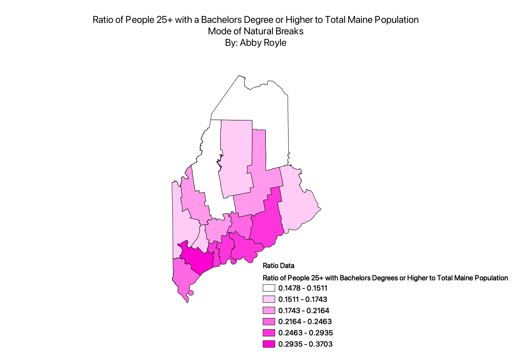
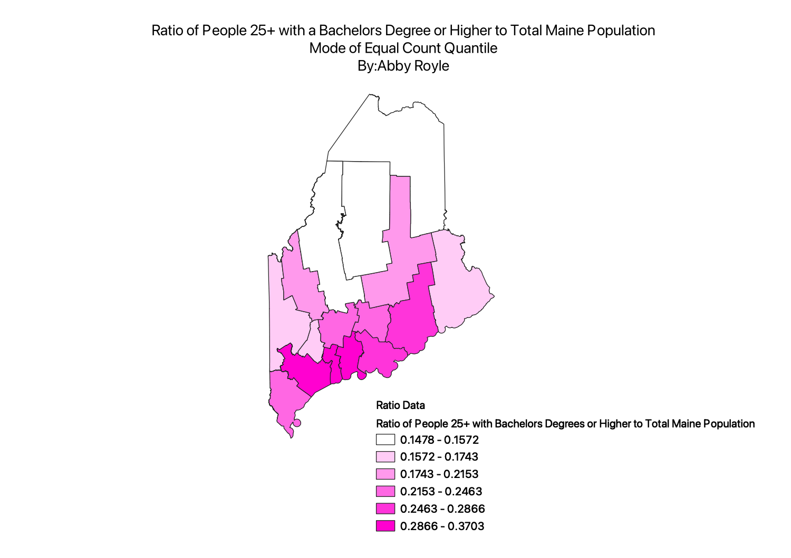
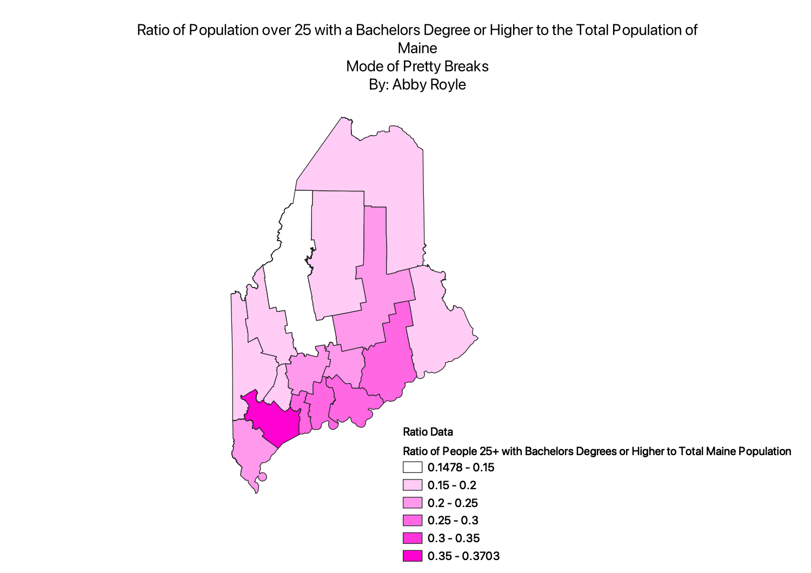

Homework 6:Part 2
Abby Royle
This map is a representation of education in different counties in Maine. The different colors in the
different colors in the gradient represent different amount of people in each county above the age of 25 with
a bachelors degree or higher. The darker the color, the more people there are that have obtained their degree.
Mode of Natural Breaks Map

Mode of Equal Count Quantile Map

Mode of Pretty Breaks Map

Data used for this project
CSV dataset for Bachelors Degree Data
Calculated Ratio Data
Population Data
Link to shapefile